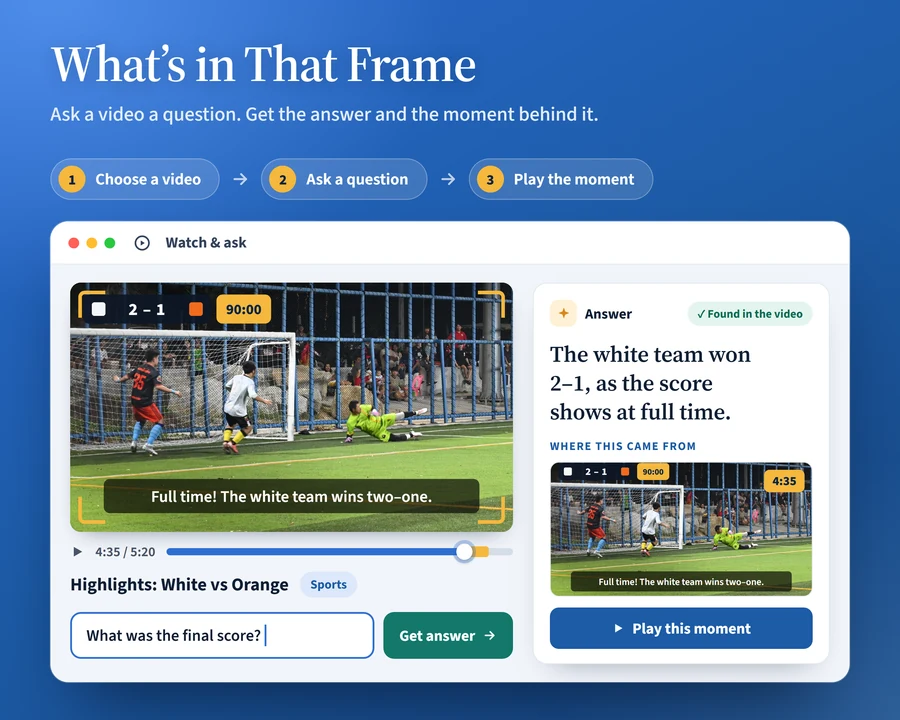
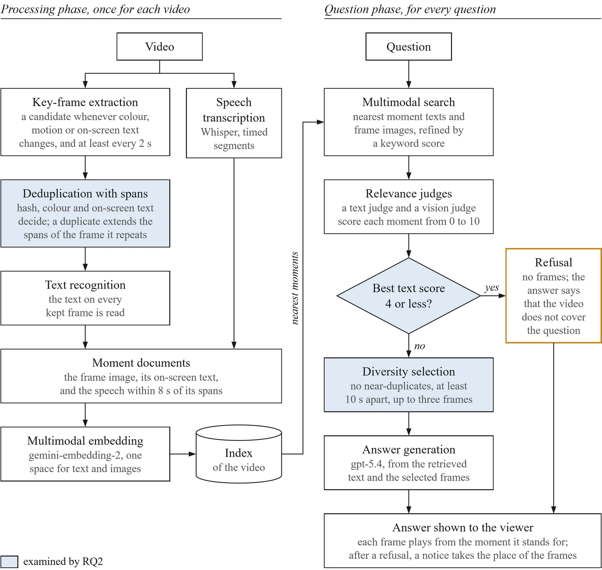
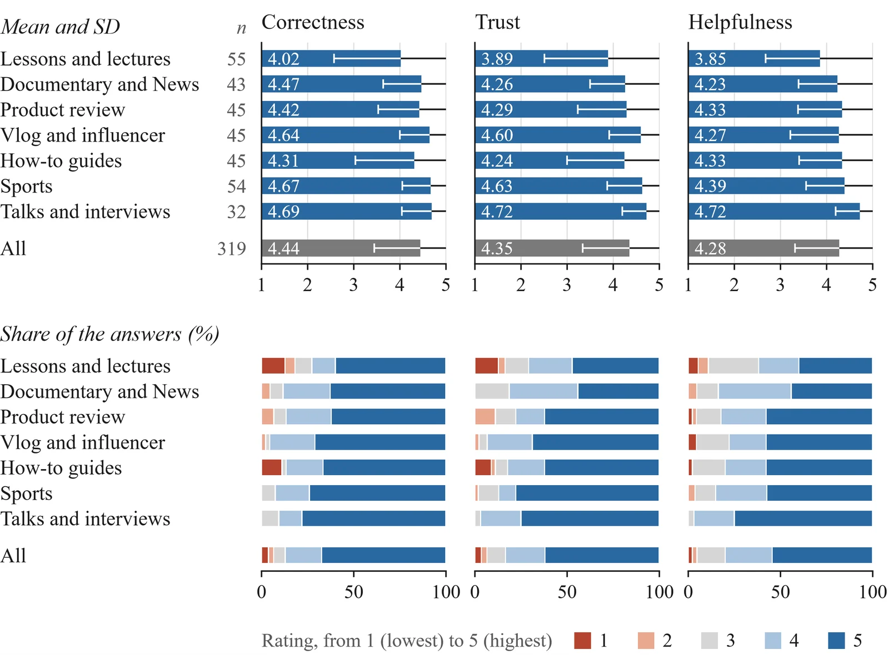
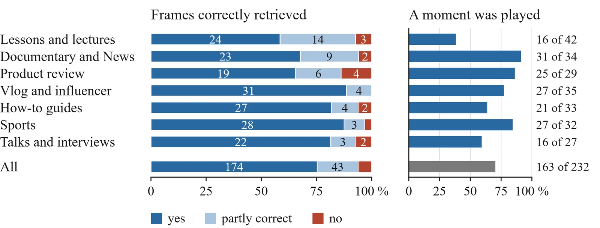
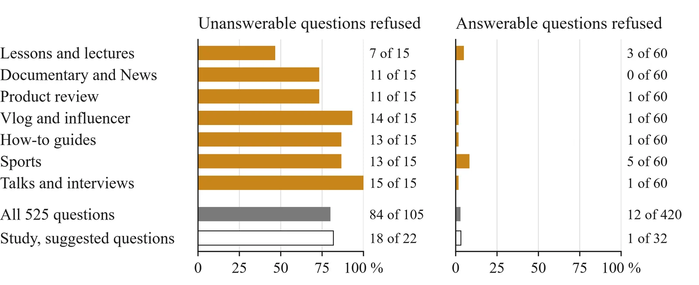
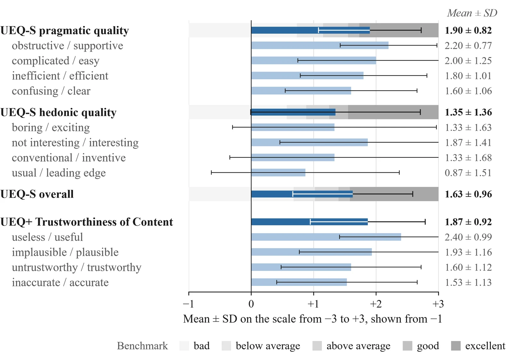
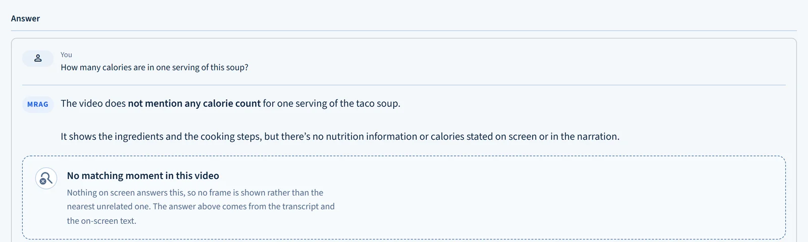

Does the system work for different kinds of video, from lectures full of text to sports and talks?
Answer. Yes. In all seven kinds of video, people rated the answers between 4.0 and 4.7 out of 5 for correctness.
An AI system that answers questions about videos and shows the exact moment in the video that proves each answer. When a video does not contain the answer, it says so.

Does it work for every kind of video, what makes its proof reliable, and can people really use it?
Answer. Yes. In all seven kinds of video, people rated the answers between 4.0 and 4.7 out of 5 for correctness.
Answer. The thesis gives twelve recommendations. Three matter most: merge repeated pictures without losing what was said, never show two look-alike pictures, and say “no” when the video has no answer.
Answer. Yes. For 75% of the answers, the pictures shown were fully correct, people played the moment for 70% of them, and they found the system easy to use.
First, the system goes through each video once: it saves the important pictures, reads the text on them and writes down what is said. When you ask a question, it finds the best matching moments, lets two AI judges check them, and answers with the pictures that prove it, or tells you that the video does not cover your question.


I tested the system on 105 YouTube videos, 15 of each kind. They keep their information in different places: lectures show a lot of text, sports change the picture very often, and in talks the answer is mostly in what people say.

Two tests: 525 questions whose answers were known, and a study in which 15 people asked their own questions about the videos.






People picked a video, asked questions while watching it, and got each answer with its pictures, or a note when the video had no answer.


Video frames, thumbnails and slides inside the figures and screenshots belong to their creators.
Completing my M.Sc. in December 2026 and available at short notice across Germany.
Seeking roles in AI engineering, applied research and IT administration.